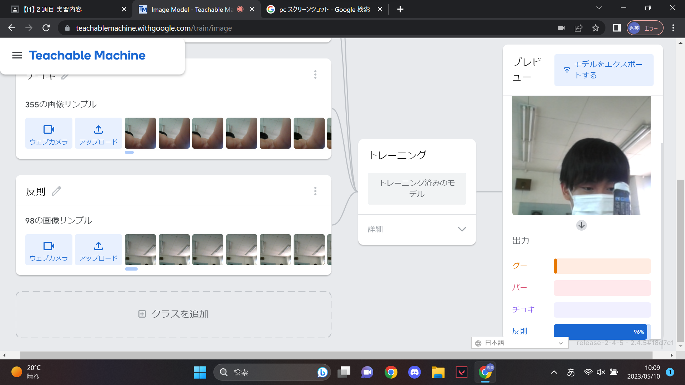
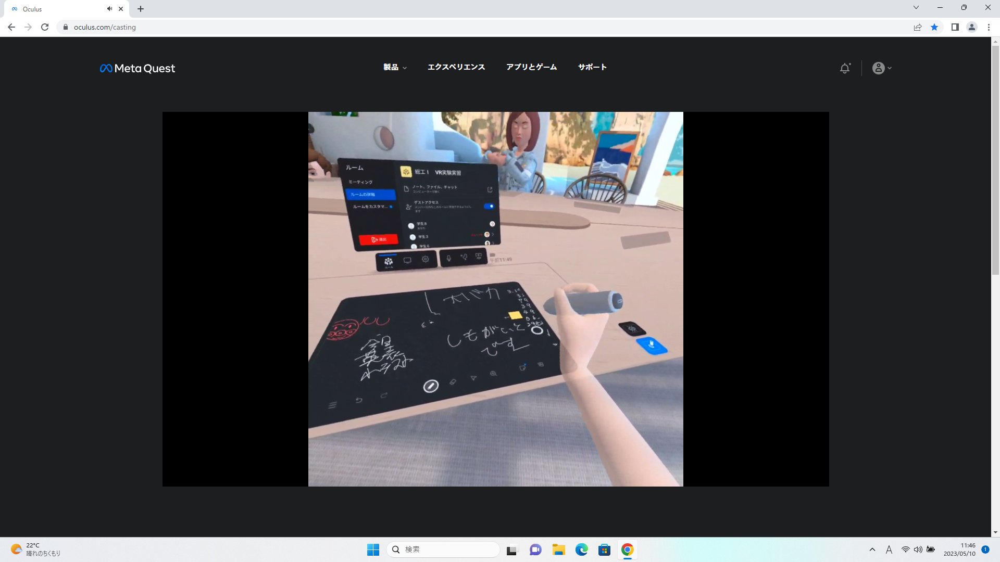

第2週目
2-1 １週目のレポートをHTMLで作る
１週目のレポート
1.内容
git hubを使用してHTMLでコードをかいて一週目のレポートのホームページを作成した。
2.感想
今のホームページは背景が白色だったり、文字や写真が左によっていたりなど、企業のホームページと比べるととても簡素な出来栄えだが
今日の授業でどのようにコードを打ち込んでいけばホームページをよりおしゃれにできるかのイメージができた。
2-2 機械学習体験

1.内容
Teachable Machineを使用してPCにグー、チョキ、パー、反則の情報を与えて機械学習をさせ、グー、チョキ、パー、反則の判別をさせた。
2.感想
グー、チョキ、パー、反則をしっかりと出した場合、PC側もしっかりと判別してくれていて面白かった。
消しゴムを写すなど、データにないようなものを出すとPC側が困っていろんな反応をしていたが、反則の割合が高くなる傾向にありすごいと思った。
2-3 VR（バーチャルリアリティー：Virtual Reality）会議室の体験

1.内容
VRを起動して、学校のミラーリング用PCとリンクさせてVR内の会議室で黒板に文字やイラストをかいて、その写真を保存した。
2.感想
初めてのVRで最初は操作方法などが分からなかったが、使用していくにつれて操作ができるようになっていった。
VRで酔うと友達が言っていて、自分は酔わないと思っていたがVRはかなりの数やって,なれないと酔ってしまうことが分かった。